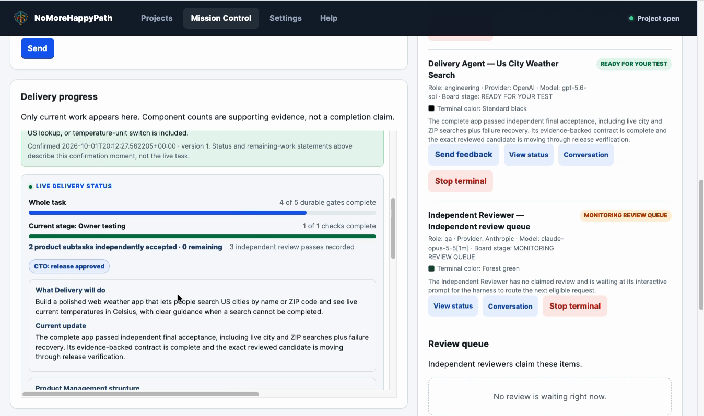
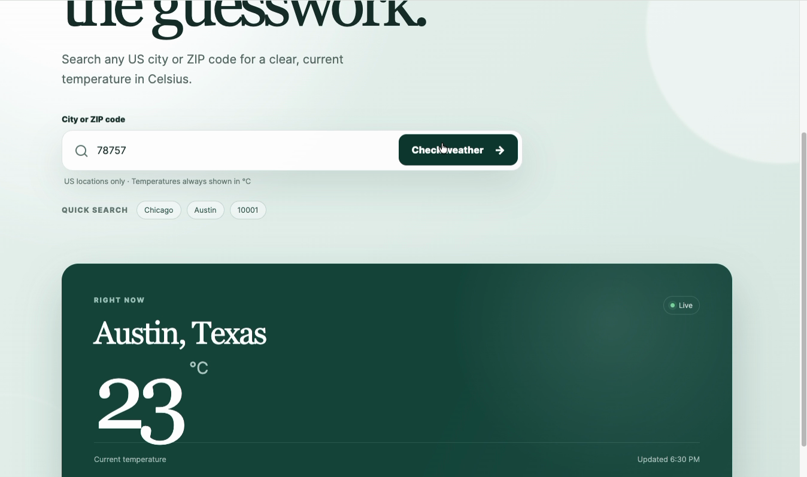

Give it the idea.
Get software you can sell.
NoMoreHappyPath is an open-source harness that builds commercial software with AI. Agents plan it, build it and test it, and agents from different AI companies check each other’s work. Nothing is accepted until the evidence exists.
Free and open source (Apache 2.0) · v0.8.0 · macOS and Linux · runs on your machine, with your own AI accounts
A real build, sped up: a weather app from one plain-English request. 48 minutes, 4 independent reviews, 1 failed. Narration by AI.
AI is great at the happy path. Customers don’t live there.
AI will build you an app that works in the demo. Then you find out what it didn’t test: the failed login, the empty screen, the error message that shows a stack trace. An AI that grades its own work passes itself almost every time, so you become the QA department for your own AI.
NoMoreHappyPath is built so that doesn’t happen: the work is checked by someone with no reason to agree.
From a sentence to software you can hand to a customer
You say what you want
In plain language. No code, no technical decisions.
It writes the contract
Agents acting as product and engineering managers write a full specification. You accept it, or change it.
It builds and checks
One AI builds. An AI from another company runs the work, tries to break it, and can fail it.
You test and accept
You get “ready for your test” with a checklist you can follow. “Done” stays your word.
Never tied to one vendor’s price
Your builder, your reviewer and your project watcher can each be Codex, Claude or Gemini. Swap them when prices or quality change. One rule never changes: whoever checks the work is never the same company as whoever built it.
Use a top model to write the plan, then lighter models to build and review: the process keeps the quality up, and your subscription usage down.
It checks what you forgot to ask for
Most AI-built apps ship without the things that quietly sink real products, because nobody thought to ask. The harness knows what a real product needs, and does it without being asked.
Security
Secrets kept out of the code, user input treated as plain text, passwords stored safely, repeated guesses slowed down, no internal errors shown to users, libraries checked for known problems.
A product people can use
Screens that work on phone and desktop, with keyboard and mouse, with empty, loading and error states handled. Not just “it rendered”.
Proof, not promises
The reviewer opens your app in a real browser and walks the path you asked for, then states plainly: task done, yes or no.
Professional-grade basics by default. Not a penetration test or a compliance audit.
A commercial property-analysis product, from a business question
Not a demo app. PropDesk answers one question a land buyer actually has: what do I need to know before I spend serious time or money on this site? NoMoreHappyPath planned it, built it, integrated the public data, and had it checked by a different AI.
PropDesk, built with NoMoreHappyPath: parcel, utilities, flood, zoning, traffic and more in one workspace. Narration by AI.
It fails its own work, and says so
These come from the project’s own records, not mocks. Passing tests didn’t stop the reviewer from failing the work.
“…the advertised safe update path fail[s] after they follow the product’s own instruction.”
That is what it costs to build something you can trust.


What you need, honestly
The platform is free. The AI agents it runs are not: they use your own accounts, and a serious build costs real money on them.
| You need | Why | Cost |
|---|---|---|
| macOS 13+ or Linux | Tested on Ubuntu 24.04. Python 3.9+. Windows isn’t supported. | Free |
| Two AI companies’ CLIs | Any two of Codex, Claude Code and Gemini (Antigravity CLI), so the reviewer is never the builder’s vendor. | Your own plans |
| OpenAI API key | Only for asking questions about your project. | Pay per use |
Two commands
git clone https://github.com/nomorehappypath/nomorehappypath.git cd nomorehappypath && bash install.sh
The installer checks everything above and tells you plainly what’s missing. Then open Mission Control, point it at a project folder, and give your first direction. Everything runs on your machine, and your code never goes to our servers.
What people ask first
Isn’t AI reviewing AI just theatre?
The reviewer isn’t reading a diff and nodding. It writes its own tests, the harness runs them and keeps the output, and the verdict has to match that output. A pass with no recorded execution behind it is refused. It also has no reason to agree: it comes from a different company than the builder.
Is this a code-review tool?
No. It’s the whole build harness: you give it an idea and agents plan, build, test and check it. The cross-vendor review is how it earns trust, not the product itself.
What does it cost to run?
The software is free. The agents run on your own subscriptions. A serious build uses real usage. Using a top model for the plan and lighter models for building and review keeps that down.
Does my code leave my computer?
The harness runs on your machine and doesn’t send your code to us. Your agents talk to their own providers, the same as when you use those tools directly.
Is it really open source?
Yes. Apache 2.0: use it, change it, use it commercially.
Does it guarantee bug-free software?
No, and nothing does. It guarantees that what ships was checked by a different AI, with evidence you can read.